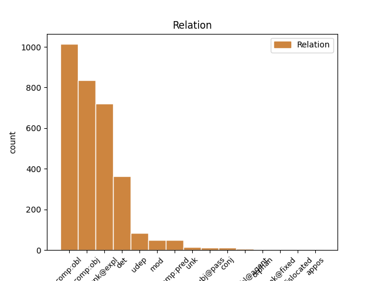
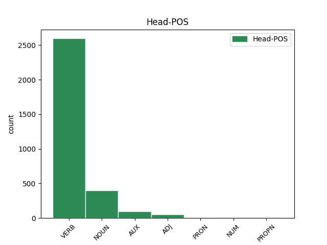
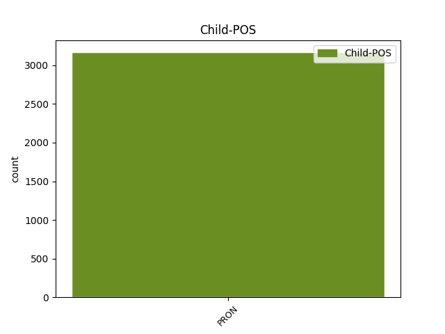

Distribution of features within this leaf



Agreement Rules sorted by frequency.
- When the dependent token is the direct object complements(comp:obj) of the head token, and the head token is VERB and the dependent token is PRON.
1 видѣвъ видѣти VERB V- Case=Nom|Gender=Masc|Number=Sing|Strength=Strong|Tense=Past|VerbForm=Part|Voice=Act 0 _ _ _
2 мѧ азъ PRON Pp Case=Acc|Number=Sing|Person=1|PronType=Prs 1 comp:obj _ ref=JOHN_20.29
3 вѣрова _ _ _ _ 0 _ _ _
1 не _ _ _ _ 0 _ _ _
2 прикасаи прикасати VERB V- Mood=Imp|Number=Sing|Person=2|Tense=Pres|VerbForm=Fin|Voice=Act 0 _ _ _
3 сѧ себе PRON Pk Case=Acc|Number=Sing|Person=3|PronType=Prs|Reflex=Yes 2 unk@expl _ ref=JOHN_20.17
4 мьнѣ _ _ _ _ 0 _ _ _
1 г҃ла глаголати VERB V- Aspect=Perf|Mood=Ind|Number=Sing|Person=3|Tense=Past|VerbForm=Fin|Voice=Act 0 _ _ _
2 емоу и PRON Pp Case=Dat|Gender=Masc|Number=Sing|Person=3|PronType=Prs 1 comp:obl _ ref=JOHN_20.29
3 и҃съ _ _ _ _ 0 _ _ _
4 ѣко _ _ _ _ 0 _ _ _
1 си _ _ _ _ 0 _ _ _
2 же _ _ _ _ 0 _ _ _
3 писана _ _ _ _ 0 _ _ _
4 бꙑшѧ _ _ _ _ 0 _ _ _
5 да _ _ _ _ 0 _ _ _
6 вѣрѫ _ _ _ _ 0 _ _ _
7 имете _ _ _ _ 0 _ _ _
8 ѣко _ _ _ _ 0 _ _ _
9 и҃с _ _ _ _ 0 _ _ _
10 естъ _ _ _ _ 0 _ _ _
11 х҃ъ _ _ _ _ 0 _ _ _
12 с҃нъ _ _ _ _ 0 _ _ _
13 б҃жіи _ _ _ _ 0 _ _ _
14 ꙇ _ _ _ _ 0 _ _ _
15 да _ _ _ _ 0 _ _ _
16 вѣрѫѭште _ _ _ _ 0 _ _ _
17 живота _ _ _ _ 0 _ _ _
18 вѣчънааго _ _ _ _ 0 _ _ _
19 имате _ _ _ _ 0 _ _ _
20 въ _ _ _ _ 0 _ _ _
21 імѧ имѧ NOUN Nb Case=Acc|Gender=Neut|Number=Sing 0 _ _ _
22 его и PRON Pp Case=Gen|Gender=Masc|Number=Sing|Person=3|PronType=Prs 21 det _ ref=JOHN_20.31
1 что чьто PRON Pi Case=Nom|Gender=Neut|Number=Sing|PronType=Int 2 comp:pred _ ref=JOHN_16.18
2 естъ бꙑти AUX V- Mood=Ind|Number=Sing|Person=3|Tense=Pres|VerbForm=Fin|Voice=Act 0 _ _ _
3 се _ _ _ _ 0 _ _ _
4 еже _ _ _ _ 0 _ _ _
5 г҃летъ _ _ _ _ 0 _ _ _
1 Приде _ _ _ _ 0 _ _ _
2 же _ _ _ _ 0 _ _ _
3 и _ _ _ _ 0 _ _ _
4 симонь _ _ _ _ 0 _ _ _
5 петръ _ _ _ _ 0 _ _ _
6 въ _ _ _ _ 0 _ _ _
7 слѣдъ слѣдъ NOUN Nb Case=Acc|Gender=Masc|Number=Sing 0 _ _ _
8 его и PRON Pp Case=Gen|Gender=Masc|Number=Sing|Person=3|PronType=Prs 7 mod _ ref=JOHN_20.6
9 ꙇ _ _ _ _ 0 _ _ _
10 вьниде _ _ _ _ 0 _ _ _
11 прѣжде _ _ _ _ 0 _ _ _
12 въ _ _ _ _ 0 _ _ _
13 гробъ _ _ _ _ 0 _ _ _
14 ꙇ _ _ _ _ 0 _ _ _
15 видѣ _ _ _ _ 0 _ _ _
16 ризꙑ _ _ _ _ 0 _ _ _
17 лежѧштѧ _ _ _ _ 0 _ _ _
18 ꙇ _ _ _ _ 0 _ _ _
19 сѵ҅дарь _ _ _ _ 0 _ _ _
20 иже _ _ _ _ 0 _ _ _
21 бѣ _ _ _ _ 0 _ _ _
22 на _ _ _ _ 0 _ _ _
23 главѣ _ _ _ _ 0 _ _ _
24 его _ _ _ _ 0 _ _ _
25 не _ _ _ _ 0 _ _ _
26 съ _ _ _ _ 0 _ _ _
27 ризами _ _ _ _ 0 _ _ _
28 лежѧшть _ _ _ _ 0 _ _ _
29 нъ _ _ _ _ 0 _ _ _
30 особь _ _ _ _ 0 _ _ _
31 съвитъ _ _ _ _ 0 _ _ _
32 на _ _ _ _ 0 _ _ _
33 единомь _ _ _ _ 0 _ _ _
34 мѣстѣ _ _ _ _ 0 _ _ _
1 жено _ _ _ _ 0 _ _ _
2 что чьто PRON Pi Case=Acc|Gender=Neut|Number=Sing|PronType=Int 4 udep _ ref=JOHN_20.15
3 сѧ _ _ _ _ 0 _ _ _
4 плачеши плакати VERB V- Mood=Ind|Number=Sing|Person=2|Tense=Pres|VerbForm=Fin|Voice=Act 0 _ _ _
1 аште _ _ _ _ 0 _ _ _
2 бисте _ _ _ _ 0 _ _ _
3 любили _ _ _ _ 0 _ _ _
4 мѧ _ _ _ _ 0 _ _ _
5 въздрадовали _ _ _ _ 0 _ _ _
6 сѧ _ _ _ _ 0 _ _ _
7 бисте _ _ _ _ 0 _ _ _
8 оубо _ _ _ _ 0 _ _ _
9 ѣко _ _ _ _ 0 _ _ _
10 рѣхъ _ _ _ _ 0 _ _ _
11 идѫ _ _ _ _ 0 _ _ _
12 къ _ _ _ _ 0 _ _ _
13 о҃тцю _ _ _ _ 0 _ _ _
14 ѣко _ _ _ _ 0 _ _ _
15 отецъ _ _ _ _ 0 _ _ _
16 мои _ _ _ _ 0 _ _ _
17 болии болии ADJ A- Case=Nom|Degree=Cmp|Gender=Masc|Number=Sing 0 _ _ _
18 мене азъ PRON Pp Case=Gen|Number=Sing|Person=1|PronType=Prs 17 comp:obl _ ref=JOHN_14.28
19 естъ _ _ _ _ 0 _ _ _
1 въ _ _ _ _ 0 _ _ _
2 грѣсѣхъ _ _ _ _ 0 _ _ _
3 тꙑ _ _ _ _ 0 _ _ _
4 родилъ _ _ _ _ 0 _ _ _
5 сѧ себе PRON Pk Case=Acc|Number=Sing|Person=3|PronType=Prs|Reflex=Yes 6 unk@expl _ ref=JOHN_9.34
6 еси бꙑти AUX V- Mood=Ind|Number=Sing|Person=2|Tense=Pres|VerbForm=Fin|Voice=Act 0 _ _ _
7 весь _ _ _ _ 0 _ _ _
8 ꙇ҅ _ _ _ _ 0 _ _ _
9 тꙑ _ _ _ _ 0 _ _ _
10 ли _ _ _ _ 0 _ _ _
11 нꙑ _ _ _ _ 0 _ _ _
12 оучиши _ _ _ _ 0 _ _ _
1 что _ _ _ _ 0 _ _ _
2 естъ бꙑти AUX V- Mood=Ind|Number=Sing|Person=3|Tense=Pres|VerbForm=Fin|Voice=Act 0 _ _ _
3 мьнѣ азъ PRON Pp Case=Dat|Number=Sing|Person=1|PronType=Prs 2 comp:obl _ ref=JOHN_2.4
4 и _ _ _ _ 0 _ _ _
5 тебѣ _ _ _ _ 0 _ _ _
6 жено _ _ _ _ 0 _ _ _
1 оунѣе оунии ADJ A- Case=Nom|Degree=Cmp|Gender=Neut|Number=Sing 0 _ _ _
2 емоу и PRON Pp Case=Dat|Gender=Masc|Number=Sing|Person=3|PronType=Prs 1 udep _ ref=LUKE_17.2
3 би _ _ _ _ 0 _ _ _
4 бꙑло _ _ _ _ 0 _ _ _
5 аште _ _ _ _ 0 _ _ _
6 би _ _ _ _ 0 _ _ _
7 камень _ _ _ _ 0 _ _ _
8 жръновънꙑ _ _ _ _ 0 _ _ _
9 възложенъ _ _ _ _ 0 _ _ _
10 на _ _ _ _ 0 _ _ _
11 вꙑѭ _ _ _ _ 0 _ _ _
12 его _ _ _ _ 0 _ _ _
13 ꙇ _ _ _ _ 0 _ _ _
14 въвръженъ _ _ _ _ 0 _ _ _
15 въ _ _ _ _ 0 _ _ _
16 море _ _ _ _ 0 _ _ _
17 неже _ _ _ _ 0 _ _ _
18 да _ _ _ _ 0 _ _ _
19 сканъдалисаатъ _ _ _ _ 0 _ _ _
20 малꙑихъ _ _ _ _ 0 _ _ _
21 сихь _ _ _ _ 0 _ _ _
22 единого _ _ _ _ 0 _ _ _
1 сѧди _ _ _ _ 0 _ _ _
2 о _ _ _ _ 0 _ _ _
3 деснѫѭ деснъ ADJ A- Case=Acc|Degree=Pos|Gender=Fem|Number=Sing|Strength=Weak 0 _ _ _
4 мене азъ PRON Pp Case=Gen|Number=Sing|Person=1|PronType=Prs 3 det _ ref=LUKE_20.42
5 доньдеже _ _ _ _ 0 _ _ _
6 положѫ _ _ _ _ 0 _ _ _
7 врагъі _ _ _ _ 0 _ _ _
8 твоѩ _ _ _ _ 0 _ _ _
9 подъножию _ _ _ _ 0 _ _ _
10 ногама _ _ _ _ 0 _ _ _
11 твоима _ _ _ _ 0 _ _ _
1 мънога _ _ _ _ 0 _ _ _
2 же _ _ _ _ 0 _ _ _
3 ина _ _ _ _ 0 _ _ _
4 знамениѣ _ _ _ _ 0 _ _ _
5 сътвори _ _ _ _ 0 _ _ _
6 и҃с _ _ _ _ 0 _ _ _
7 прѣдъ _ _ _ _ 0 _ _ _
8 оученикꙑ _ _ _ _ 0 _ _ _
9 своими _ _ _ _ 0 _ _ _
10 ѣже иже PRON Pr Case=Nom|Gender=Neut|Number=Plur|PronType=Rel 12 subj@pass _ ref=JOHN_20.30
11 не _ _ _ _ 0 _ _ _
12 сѫтъ бꙑти AUX V- Mood=Ind|Number=Plur|Person=3|Tense=Pres|VerbForm=Fin|Voice=Act 0 _ _ _
13 писана _ _ _ _ 0 _ _ _
14 въ _ _ _ _ 0 _ _ _
15 кънигахъ _ _ _ _ 0 _ _ _
16 сихъ _ _ _ _ 0 _ _ _
1 не _ _ _ _ 0 _ _ _
2 посъла _ _ _ _ 0 _ _ _
3 бо _ _ _ _ 0 _ _ _
4 б҃ъ _ _ _ _ 0 _ _ _
5 с҃на _ _ _ _ 0 _ _ _
6 своего _ _ _ _ 0 _ _ _
7 вь _ _ _ _ 0 _ _ _
8 миръ _ _ _ _ 0 _ _ _
9 да _ _ _ _ 0 _ _ _
10 содитъ _ _ _ _ 0 _ _ _
11 мироу _ _ _ _ 0 _ _ _
12 нъ _ _ _ _ 0 _ _ _
13 да _ _ _ _ 0 _ _ _
14 съпасетъ съпасти VERB V- Mood=Ind|Number=Sing|Person=3|Tense=Pres|VerbForm=Fin|Voice=Act 0 _ _ _
15 сѧ _ _ _ _ 0 _ _ _
16 миръ _ _ _ _ 0 _ _ _
17 имъ и PRON Pp Case=Ins|Gender=Masc|Number=Sing|Person=3|PronType=Prs 14 comp:obl@agent _ ref=JOHN_3.17
1 ненавидѧи ненавидѣти VERB V- Case=Nom|Gender=Masc|Number=Sing|Strength=Weak|Tense=Pres|VerbForm=Part|Voice=Act 0 _ _ _
2 мене азъ PRON Pp Case=Gen|Number=Sing|Person=1|PronType=Prs 1 unk _ ref=JOHN_15.23
3 и _ _ _ _ 0 _ _ _
4 о҃тца _ _ _ _ 0 _ _ _
5 моего _ _ _ _ 0 _ _ _
6 ненавидитъ _ _ _ _ 0 _ _ _
1 тꙑ _ _ _ _ 0 _ _ _
2 же _ _ _ _ 0 _ _ _
3 колицѣмь коликъ PRON Pi Case=Ins|Gender=Neut|Number=Sing|PronType=Int 5 udep _ ref=LUKE_16.7
4 длъженъ _ _ _ _ 0 _ _ _
5 еси бꙑти AUX V- Mood=Ind|Number=Sing|Person=2|Tense=Pres|VerbForm=Fin|Voice=Act 0 _ _ _
1 Ѣдꙑ _ _ _ _ 0 _ _ _
2 моѭ _ _ _ _ 0 _ _ _
3 плътъ _ _ _ _ 0 _ _ _
4 и _ _ _ _ 0 _ _ _
5 пиѩи _ _ _ _ 0 _ _ _
6 моѭ _ _ _ _ 0 _ _ _
7 кръвь _ _ _ _ 0 _ _ _
8 вь _ _ _ _ 0 _ _ _
9 мьнѣ _ _ _ _ 0 _ _ _
10 прѣбꙑваатъ прѣбꙑвати VERB V- Mood=Ind|Number=Sing|Person=3|Tense=Pres|VerbForm=Fin|Voice=Act 0 _ _ _
11 и _ _ _ _ 0 _ _ _
12 азъ азъ PRON Pp Case=Nom|Number=Sing|Person=1|PronType=Prs 10 conj _ ref=JOHN_6.56
13 вь _ _ _ _ 0 _ _ _
14 немь _ _ _ _ 0 _ _ _
1 отъвѣштавъ _ _ _ _ 0 _ _ _
2 же _ _ _ _ 0 _ _ _
3 единъ _ _ _ _ 0 _ _ _
4 емоуже иже PRON Pr Case=Dat|Gender=Masc|Number=Sing|PronType=Rel 6 comp:obl _ ref=LUKE_24.18
5 имѧ _ _ _ _ 0 _ _ _
6 клеопа клеопа PROPN Ne Case=Nom|Gender=Masc|Number=Sing 0 _ _ _
7 рече _ _ _ _ 0 _ _ _
8 къ _ _ _ _ 0 _ _ _
9 немоу _ _ _ _ 0 _ _ _
1 пѧть _ _ _ _ 0 _ _ _
2 бо _ _ _ _ 0 _ _ _
3 мѫжь _ _ _ _ 0 _ _ _
4 имѣла _ _ _ _ 0 _ _ _
5 еси _ _ _ _ 0 _ _ _
6 ꙇ _ _ _ _ 0 _ _ _
7 нꙑнѣ _ _ _ _ 0 _ _ _
8 егоже _ _ _ _ 0 _ _ _
9 имаши _ _ _ _ 0 _ _ _
10 нѣстъ _ _ _ _ 0 _ _ _
11 ти тꙑ PRON Pp Case=Dat|Number=Sing|Person=2|PronType=Prs 12 comp:obl _ ref=JOHN_4.18
12 мѫжъ мѫжь NOUN Nb Case=Nom|Gender=Masc|Number=Sing 0 _ _ _
1 равьви _ _ _ _ 0 _ _ _
2 добро _ _ _ _ 0 _ _ _
3 естъ _ _ _ _ 0 _ _ _
4 намъ _ _ _ _ 0 _ _ _
5 съде _ _ _ _ 0 _ _ _
6 бꙑти _ _ _ _ 0 _ _ _
7 ꙇ _ _ _ _ 0 _ _ _
8 сътворимъ _ _ _ _ 0 _ _ _
9 три _ _ _ _ 0 _ _ _
10 скиниѩ _ _ _ _ 0 _ _ _
11 тебѣ тꙑ PRON Pp Case=Dat|Number=Sing|Person=2|PronType=Prs 12 orphan _ ref=MARK_9.5
12 единѫ ѥдинъ NUM Ma Case=Acc|Gender=Fem|Number=Sing 0 _ _ _
13 и _ _ _ _ 0 _ _ _
14 мосеові _ _ _ _ 0 _ _ _
15 единѫ _ _ _ _ 0 _ _ _
16 ꙇ _ _ _ _ 0 _ _ _
17 илии _ _ _ _ 0 _ _ _
18 единѫ _ _ _ _ 0 _ _ _
1 ꙇ _ _ _ _ 0 _ _ _
2 си _ _ _ _ 0 _ _ _
3 такожде _ _ _ _ 0 _ _ _
4 сѫтъ _ _ _ _ 0 _ _ _
5 ꙇже иже PRON Pr Case=Nom|Gender=Masc|Number=Plur|PronType=Rel 8 subj@pass _ ref=MARK_4.16
6 на _ _ _ _ 0 _ _ _
7 каменънꙑхъ _ _ _ _ 0 _ _ _
8 сѣеми сѣти VERB V- Case=Nom|Gender=Masc|Number=Plur|Strength=Strong|Tense=Pres|VerbForm=Part|Voice=Pass 0 _ _ _
9 ꙇже _ _ _ _ 0 _ _ _
10 егда _ _ _ _ 0 _ _ _
11 слꙑшѧтъ _ _ _ _ 0 _ _ _
12 слово _ _ _ _ 0 _ _ _
13 абие _ _ _ _ 0 _ _ _
14 съ _ _ _ _ 0 _ _ _
15 радостиѭ _ _ _ _ 0 _ _ _
16 приемлѭтъ _ _ _ _ 0 _ _ _
17 е҅ _ _ _ _ 0 _ _ _
18 ꙇ _ _ _ _ 0 _ _ _
19 не _ _ _ _ 0 _ _ _
20 имѫтъ _ _ _ _ 0 _ _ _
21 корене _ _ _ _ 0 _ _ _
22 вь _ _ _ _ 0 _ _ _
23 себѣ _ _ _ _ 0 _ _ _
24 нъ _ _ _ _ 0 _ _ _
25 врѣменьни _ _ _ _ 0 _ _ _
26 сѫтъ _ _ _ _ 0 _ _ _
1 приключишѧ _ _ _ _ 0 _ _ _
2 же _ _ _ _ 0 _ _ _
3 сѧ _ _ _ _ 0 _ _ _
4 едини _ _ _ _ 0 _ _ _
5 въ _ _ _ _ 0 _ _ _
6 то _ _ _ _ 0 _ _ _
7 врѣмѧ _ _ _ _ 0 _ _ _
8 повѣдаѫште _ _ _ _ 0 _ _ _
9 емоу _ _ _ _ 0 _ _ _
10 о _ _ _ _ 0 _ _ _
11 галилеихъ _ _ _ _ 0 _ _ _
12 ꙇ҅. иже PRON Pr Case=Gen|Gender=Masc|Number=Plur|PronType=Rel 0 _ _ _
13 хъже хъже PRON Pr Case=Gen|Gender=Masc|Number=Plur|PronType=Rel 12 unk@fixed _ ref=LUKE_13.1
14 кръвъ _ _ _ _ 0 _ _ _
15 пилатъ _ _ _ _ 0 _ _ _
16 съмѣси _ _ _ _ 0 _ _ _
17 съ _ _ _ _ 0 _ _ _
18 жрътвами _ _ _ _ 0 _ _ _
19 ихъ _ _ _ _ 0 _ _ _
1 кого къто PRON Pi Case=Gen|Number=Sing|PronType=Int 5 comp:pred _ ref=JOHN_8.53
2 сѧ _ _ _ _ 0 _ _ _
3 самъ _ _ _ _ 0 _ _ _
4 тꙑ _ _ _ _ 0 _ _ _
5 твориши творити VERB V- Mood=Ind|Number=Sing|Person=2|Tense=Pres|VerbForm=Fin|Voice=Act 0 _ _ _
1 Ꙇ _ _ _ _ 0 _ _ _
2 си _ _ _ _ 0 _ _ _
3 сътворѧтъ _ _ _ _ 0 _ _ _
4 вамъ _ _ _ _ 0 _ _ _
5 ѣко _ _ _ _ 0 _ _ _
6 не _ _ _ _ 0 _ _ _
7 познашѧ _ _ _ _ 0 _ _ _
8 о҃тца отьць NOUN Nb Case=Gen|Gender=Masc|Number=Sing 0 _ _ _
9 ни _ _ _ _ 0 _ _ _
10 мене азъ PRON Pp Case=Gen|Number=Sing|Person=1|PronType=Prs 8 conj _ ref=JOHN_16.3
1 что _ _ _ _ 0 _ _ _
2 естъ _ _ _ _ 0 _ _ _
3 мьнѣ азъ PRON Pp Case=Dat|Number=Sing|Person=1|PronType=Prs 0 _ _ _
4 и _ _ _ _ 0 _ _ _
5 тебѣ тꙑ PRON Pp Case=Dat|Number=Sing|Person=2|PronType=Prs 3 conj _ ref=JOHN_2.4
6 жено _ _ _ _ 0 _ _ _
1 сотоно _ _ _ _ 0 _ _ _
2 съблазнъ съблазнъ NOUN Nb Case=Nom|Gender=Masc|Number=Sing 0 _ _ _
3 ми азъ PRON Pp Case=Dat|Number=Sing|Person=1|PronType=Prs 2 udep _ ref=MATT_16.23
4 еси _ _ _ _ 0 _ _ _
5 ѣко _ _ _ _ 0 _ _ _
6 не _ _ _ _ 0 _ _ _
7 мꙑслиши _ _ _ _ 0 _ _ _
8 ѣже _ _ _ _ 0 _ _ _
9 сѫтъ _ _ _ _ 0 _ _ _
10 б҃жиѣ _ _ _ _ 0 _ _ _
11 и _ _ _ _ 0 _ _ _
12 ч҃лчскаѣ _ _ _ _ 0 _ _ _
1 вꙑ вꙑ PRON Pp Case=Nom|Number=Plur|Person=2|PronType=Prs 15 dislocated _ ref=MATT_19.28
2 шедъшеи _ _ _ _ 0 _ _ _
3 по _ _ _ _ 0 _ _ _
4 мънѣ _ _ _ _ 0 _ _ _
5 въ _ _ _ _ 0 _ _ _
6 пакꙑбꙑтии _ _ _ _ 0 _ _ _
7 егда _ _ _ _ 0 _ _ _
8 сѧдетъ _ _ _ _ 0 _ _ _
9 с҃нъ _ _ _ _ 0 _ _ _
10 ч҃лвскꙑ _ _ _ _ 0 _ _ _
11 на _ _ _ _ 0 _ _ _
12 прѣстолѣ _ _ _ _ 0 _ _ _
13 славꙑ _ _ _ _ 0 _ _ _
14 своеѩ҅ _ _ _ _ 0 _ _ _
15 Сѧдете сѣсти VERB V- Mood=Ind|Number=Plur|Person=2|Tense=Pres|VerbForm=Fin|Voice=Act 0 _ _ _
16 и _ _ _ _ 0 _ _ _
17 вꙑ _ _ _ _ 0 _ _ _
18 на _ _ _ _ 0 _ _ _
19 дъвою _ _ _ _ 0 _ _ _
20 на _ _ _ _ 0 _ _ _
21 десѧте _ _ _ _ 0 _ _ _
22 прѣстолоу _ _ _ _ 0 _ _ _
23 сѫдѧште _ _ _ _ 0 _ _ _
24 обѣма _ _ _ _ 0 _ _ _
25 на _ _ _ _ 0 _ _ _
26 десѧте _ _ _ _ 0 _ _ _
27 колѣнома _ _ _ _ 0 _ _ _
28 и҃здраилвма _ _ _ _ 0 _ _ _
1 ꙇли _ _ _ _ 0 _ _ _
2 нѣстъ _ _ _ _ 0 _ _ _
3 ми азъ PRON Pp Case=Dat|Number=Sing|Person=1|PronType=Prs 0 _ _ _
4 лѣть _ _ _ _ 0 _ _ _
5 сътворити _ _ _ _ 0 _ _ _
6 въ _ _ _ _ 0 _ _ _
7 своихъ _ _ _ _ 0 _ _ _
8 ми азъ PRON Pp Case=Dat|Number=Sing|Person=1|PronType=Prs 3 appos _ ref=MATT_20.15
9 еже _ _ _ _ 0 _ _ _
10 хоштѫ _ _ _ _ 0 _ _ _
1 Тъгда _ _ _ _ 0 _ _ _
2 видѣвъ _ _ _ _ 0 _ _ _
3 июда _ _ _ _ 0 _ _ _
4 прѣдавꙑи прѣдати VERB V- Case=Nom|Gender=Masc|Number=Sing|Strength=Weak|Tense=Past|VerbForm=Part|Voice=Act 0 _ _ _
5 его и PRON Pp Case=Gen|Gender=Masc|Number=Sing|Person=3|PronType=Prs 4 det _ ref=MATT_27.3
6 ѣко _ _ _ _ 0 _ _ _
7 осѫдишѧ _ _ _ _ 0 _ _ _
8 и _ _ _ _ 0 _ _ _
9 раскаавъ _ _ _ _ 0 _ _ _
10 сѧ _ _ _ _ 0 _ _ _
11 възврати _ _ _ _ 0 _ _ _
12 три _ _ _ _ 0 _ _ _
13 десѧти _ _ _ _ 0 _ _ _
14 съребрьникъ _ _ _ _ 0 _ _ _
15 архиереомъ _ _ _ _ 0 _ _ _
16 и _ _ _ _ 0 _ _ _
17 старьцемъ _ _ _ _ 0 _ _ _
18 г҃лѧ _ _ _ _ 0 _ _ _
1 вѣсте _ _ _ _ 0 _ _ _
2 ѣко _ _ _ _ 0 _ _ _
3 мьнѧштеи _ _ _ _ 0 _ _ _
4 сѧ _ _ _ _ 0 _ _ _
5 власти _ _ _ _ 0 _ _ _
6 ѩ҃зкꙑ _ _ _ _ 0 _ _ _
7 оустоѩтъ _ _ _ _ 0 _ _ _
8 имъ _ _ _ _ 0 _ _ _
9 и _ _ _ _ 0 _ _ _
10 велици великъ ADJ A- Case=Nom|Degree=Pos|Gender=Masc|Number=Plur|Strength=Strong 0 _ _ _
11 ихъ и PRON Pp Case=Gen|Gender=Masc|Number=Plur|Person=3|PronType=Prs 10 mod _ ref=MARK_10.42
12 обладаѭ҄тъ _ _ _ _ 0 _ _ _
13 ими _ _ _ _ 0 _ _ _
1 Нъ _ _ _ _ 0 _ _ _
2 не _ _ _ _ 0 _ _ _
3 ѣко _ _ _ _ 0 _ _ _
4 азъ _ _ _ _ 0 _ _ _
5 хоштѫ _ _ _ _ 0 _ _ _
6 нъ _ _ _ _ 0 _ _ _
7 еже иже PRON Pr Case=Acc|Gender=Neut|Number=Sing|PronType=Rel 8 orphan _ ref=MARK_14.36
8 тъ тъ ADJ Pd Case=Nom|Gender=Masc|Number=Sing 0 _ _ _
1 тъ _ _ _ _ 0 _ _ _
2 вꙑ _ _ _ _ 0 _ _ _
3 крьститъ _ _ _ _ 0 _ _ _
4 д҃хмь _ _ _ _ 0 _ _ _
5 с҃тꙑмъ _ _ _ _ 0 _ _ _
6 и _ _ _ _ 0 _ _ _
7 о҃гнемь _ _ _ _ 0 _ _ _
8 емоуже иже PRON Pr Case=Dat|Gender=Masc|Number=Sing|PronType=Rel 9 orphan _ ref=LUKE_3.17
9 лопата лопата NOUN Nb Case=Nom|Gender=Fem|Number=Sing 0 _ _ _
10 въ _ _ _ _ 0 _ _ _
11 рѫцѣ _ _ _ _ 0 _ _ _
12 его _ _ _ _ 0 _ _ _
13 ꙇ _ _ _ _ 0 _ _ _
14 потрѣбитъ _ _ _ _ 0 _ _ _
15 гоумьно _ _ _ _ 0 _ _ _
16 свое҅ _ _ _ _ 0 _ _ _
17 ꙇ _ _ _ _ 0 _ _ _
18 съберетъ _ _ _ _ 0 _ _ _
19 пшеницѫ _ _ _ _ 0 _ _ _
20 въ _ _ _ _ 0 _ _ _
21 житьницѫ _ _ _ _ 0 _ _ _
22 своѭ _ _ _ _ 0 _ _ _
23 а _ _ _ _ 0 _ _ _
24 плѣвꙑ _ _ _ _ 0 _ _ _
25 съжежетъ _ _ _ _ 0 _ _ _
26 огнемь _ _ _ _ 0 _ _ _
27 не _ _ _ _ 0 _ _ _
28 гашѫштиимь _ _ _ _ 0 _ _ _
1 бꙑвьшѧ _ _ _ _ 0 _ _ _
2 рано _ _ _ _ 0 _ _ _
3 оу _ _ _ _ 0 _ _ _
4 гроба _ _ _ _ 0 _ _ _
5 ꙇ _ _ _ _ 0 _ _ _
6 не _ _ _ _ 0 _ _ _
7 обрѣтъшѧ _ _ _ _ 0 _ _ _
8 тѣлесе _ _ _ _ 0 _ _ _
9 его _ _ _ _ 0 _ _ _
10 придѫ _ _ _ _ 0 _ _ _
11 г҃лѭштѧ _ _ _ _ 0 _ _ _
12 ꙇ _ _ _ _ 0 _ _ _
13 авление _ _ _ _ 0 _ _ _
14 а҃ньꙉлъ _ _ _ _ 0 _ _ _
15 видѣвъшѧ _ _ _ _ 0 _ _ _
16 ꙇже _ _ _ _ 0 _ _ _
17 г҃лѭтъ _ _ _ _ 0 _ _ _
18 і и PRON Pp Case=Acc|Gender=Masc|Number=Sing|Person=3|PronType=Prs 19 comp:obj _ ref=LUKE_24.23
19 жива живъ ADJ A- Case=Gen|Degree=Pos|Gender=Masc,Neut|Number=Sing|Strength=Strong 0 _ _ _
1 аште _ _ _ _ 0 _ _ _
2 ли _ _ _ _ 0 _ _ _
3 сѫждѫ _ _ _ _ 0 _ _ _
4 азъ _ _ _ _ 0 _ _ _
5 сѫдъ _ _ _ _ 0 _ _ _
6 мои _ _ _ _ 0 _ _ _
7 истиненъ _ _ _ _ 0 _ _ _
8 естъ _ _ _ _ 0 _ _ _
9 ѣко _ _ _ _ 0 _ _ _
10 единъ ѥдинъ NUM Ma Case=Nom|Gender=Masc|Number=Sing 0 _ _ _
11 нѣсмъ _ _ _ _ 0 _ _ _
12 нъ _ _ _ _ 0 _ _ _
13 азъ азъ PRON Pp Case=Nom|Number=Sing|Person=1|PronType=Prs 10 conj _ ref=JOHN_8.16
14 и _ _ _ _ 0 _ _ _
15 посълавꙑ _ _ _ _ 0 _ _ _
16 мѧ _ _ _ _ 0 _ _ _
17 о҃тцъ _ _ _ _ 0 _ _ _
Disagree Examples:
1 Ꙇ _ _ _ _ 0 _ _ _
2 се _ _ _ _ 0 _ _ _
3 принѣсѧ принести VERB V- Aspect=Perf|Mood=Ind|Number=Plur|Person=3|Tense=Past|VerbForm=Fin|Voice=Act 0 _ _ _
4 емоу и PRON Pp Case=Dat|Gender=Masc|Number=Sing|Person=3|PronType=Prs 3 comp:obl _ ref=MATT_9.2
5 ослабленъ _ _ _ _ 0 _ _ _
6 жилами _ _ _ _ 0 _ _ _
7 на _ _ _ _ 0 _ _ _
8 одрѣ _ _ _ _ 0 _ _ _
9 лежѧщъ _ _ _ _ 0 _ _ _
1 ꙇ _ _ _ _ 0 _ _ _
2 видѣвъ _ _ _ _ 0 _ _ _
3 и҃съ _ _ _ _ 0 _ _ _
4 вѣрѫ вѣра NOUN Nb Case=Acc|Gender=Fem|Number=Sing 0 _ _ _
5 ихъ и PRON Pp Case=Gen|Gender=Masc|Number=Plur|Person=3|PronType=Prs 4 det _ ref=MATT_9.2
6 рече _ _ _ _ 0 _ _ _
7 ослабленоуемоу _ _ _ _ 0 _ _ _
1 чѧдо _ _ _ _ 0 _ _ _
2 отъпоуштаѭтъ отъпоущати VERB V- Mood=Ind|Number=Plur|Person=3|Tense=Pres|VerbForm=Fin|Voice=Act 0 _ _ _
3 сѧ себе PRON Pk Case=Acc|Number=Sing|Person=3|PronType=Prs|Reflex=Yes 2 unk@expl _ ref=MATT_9.2
4 грѣси _ _ _ _ 0 _ _ _
5 твои _ _ _ _ 0 _ _ _
1 чъто _ _ _ _ 0 _ _ _
2 бо _ _ _ _ 0 _ _ _
3 естъ _ _ _ _ 0 _ _ _
4 оудобѣе _ _ _ _ 0 _ _ _
5 решти _ _ _ _ 0 _ _ _
6 отъпоущаѭтъ отъпоустити VERB V- Mood=Ind|Number=Plur|Person=3|Tense=Pres|VerbForm=Fin|Voice=Act 0 _ _ _
7 сѧ себе PRON Pk Case=Acc|Number=Sing|Person=3|PronType=Prs|Reflex=Yes 6 unk@expl _ ref=MATT_9.5
8 грѣси _ _ _ _ 0 _ _ _
9 твои _ _ _ _ 0 _ _ _
10 ли _ _ _ _ 0 _ _ _
11 рещи _ _ _ _ 0 _ _ _
1 видѣвъше _ _ _ _ 0 _ _ _
2 же _ _ _ _ 0 _ _ _
3 народи _ _ _ _ 0 _ _ _
4 чюдишѧ чоудити VERB V- Aspect=Perf|Mood=Ind|Number=Plur|Person=3|Tense=Past|VerbForm=Fin|Voice=Act 0 _ _ _
5 сѧ себе PRON Pk Case=Acc|Number=Sing|Person=3|PronType=Prs|Reflex=Yes 4 unk@expl _ ref=MATT_9.8
6 и _ _ _ _ 0 _ _ _
7 прославишѧ _ _ _ _ 0 _ _ _
8 б҃а _ _ _ _ 0 _ _ _
9 давъшааго _ _ _ _ 0 _ _ _
10 власть _ _ _ _ 0 _ _ _
11 такѫ _ _ _ _ 0 _ _ _
12 ч҃лвкомъ _ _ _ _ 0 _ _ _